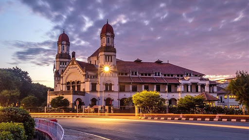

Orang-orang mungkin mengenal gedung ini dengan nama Lawang Sewu, tapi tahukah kamu jika itu bukanlah nama asli dari Lawang Sewu. Di awal pembangunannya, bangunan ini bernama Nederlands Indische Spoorweg Maatschappij. Sedangkan dalam bahasa Jawa, Lawang Sewu artinya seribu pintu. Namun hanya karena namanya "Lawang Sewu", tidak berarti gedung ini benar-benar punya seribu pintu. Faktanya, Lawang Sewu hanya memiliki 429 pintu. Tapi sama seperti kebanyakan gedung Belanda lainnya, Lawang Sewu memiliki banyak jendela besar yang jika dilihat dari jauh akan terlihat seperti pintu. Dan itulah alasannya kenapa orang-orang menyebut gedung ini sebagai "Lawang Sewu".